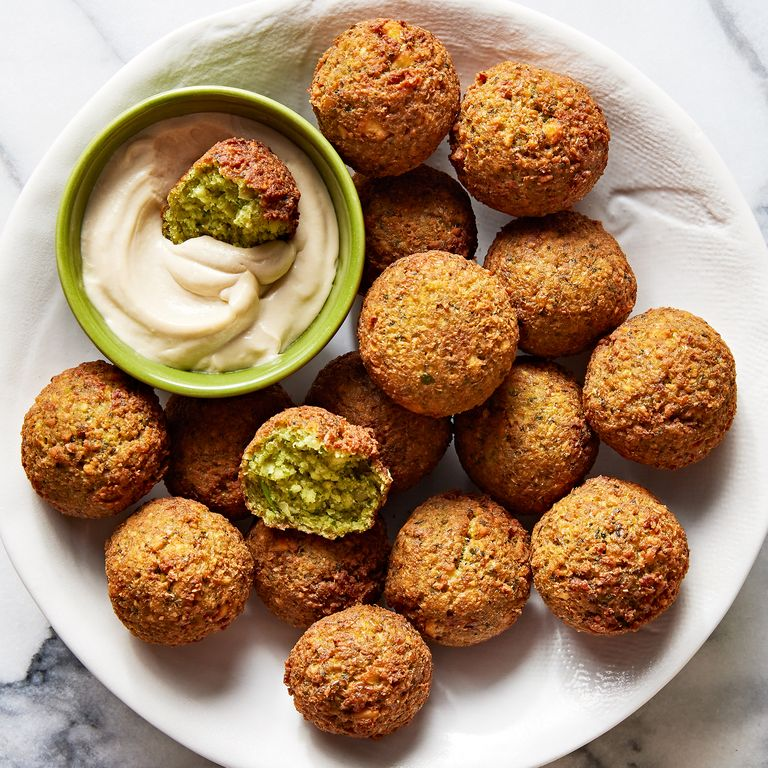

Falafel
Falafel - Doesn't that look delicious?
Description
Falafel may be king of Middle Eastern street food, but that doesn’t mean you have to travel to enjoy it at its best. Boasting a crisp, golden-brown exterior and a center that’s soft, tender, and packed with chickpeas and fresh herbs, our favorite homemade falafel recipe hits all those classic Middle Eastern flavors and familiar street food vibes.
Ingredients
- 1 c. dried chickpeas
- 1/2 small white onion, coarsely chopped
- 4 cloves garlic, coarsely chopped
- 1/4 c. fresh cilantro, coarsely chopped
- 1/4 c. fresh parsley, coarsely chopped
- 1 1/2 tsp. kosher salt
- 1 tsp. baking powder
- 1 tsp. ground coriander
- 1 tsp. ground cumin
- 1/4 c. all-purpose flour
- vegetable oil, for frying
- tahini sauce, for serving
Steps
- Pour chickpeas into a large bowl and add cold water to cover by at least 2". Cover and refrigerate overnight.
- Drain chickpeas well, pat dry, and transfer to a food processor. Pulse until chickpeas are halfway broken down. Add onion, garlic, cilantro, parsley, salt, baking powder, coriander, and cumin. Continue to pulse until finely chopped but not pasty. Sprinkle flour over and pulse just until combined.
- Using clean hands, scoop from the mixture and roll each ball, tossing between both hands and lightly squeezing to compress, until smooth and compact (mixture will feel wet). Arrange balls on a clean plate or parchment-lined baking sheet
- Into a large heavy pot fitted with a deep-fry or candy thermometer, pour oil to a depth of 2". Heat over high heat until thermometer registers 350°. Set a wire rack in a large baking sheet. Working 6 to 7 at a time, gently lower falafel into oil and fry, adjusting heat as needed, until deeply browned on all sides, 2 to 3 minutes
- Remove from oil with a slotted spoon and transfer to prepared rack to cool. Serve warm with tahini sauce and enjoy!